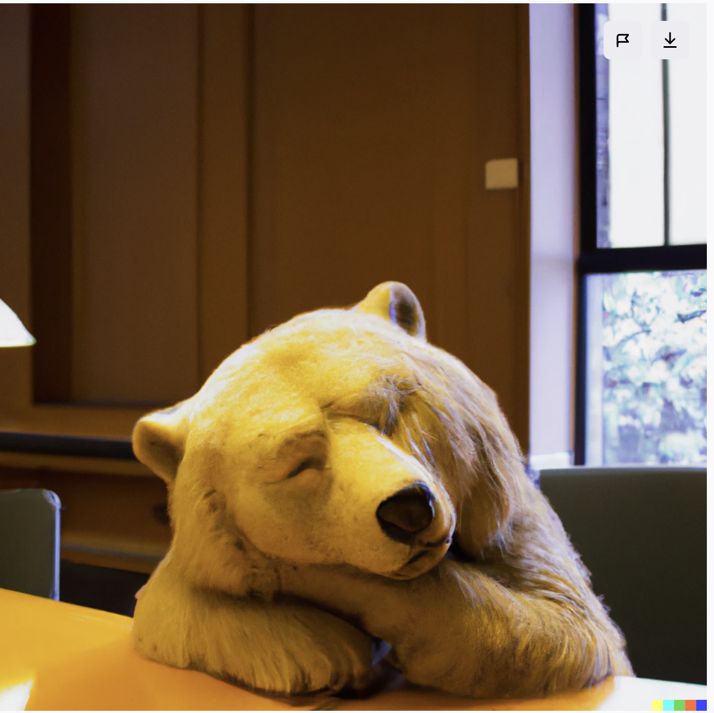

/* MODAL */
.modal{
  position:fixed;
  inset:0;
  display:none;
  align-items:center;
  justify-content:center;
  z-index:9999;
  background:rgba(0,0,0,0.8);
  padding:20px;
}
.modal.open{display:flex}
.modal-content{
  max-width:92vw;
  max-height:90vh;
  overflow:auto;
  border-radius:8px;
  background:linear-gradient(180deg,#0b0b0b,#101010);
  padding:18px;
  box-shadow:0 12px 40px rgba(0,0,0,0.9);
}
.modal-content img{display:block;max-width:100%;height:auto;border-radius:4px}
.modal-caption{color:var(--muted);font-size:14px;margin-top:8px}
.modal-close{
  position:absolute;top:18px;right:22px;color:#fff;font-size:22px;text-decoration:none;
}

/* Floating alternating story boxes */
.story-box{
  max-width:60%;
  padding:10px 14px;
  background:rgba(40,40,40,0.9);
  color:#eaeaea;
  font-size:14px;
  line-height:1.4;
  border-radius:8px;
  box-shadow:0 4px 14px rgba(0,0,0,0.6);
  backdrop-filter:blur(4px);
  opacity:0;
  transition:opacity 1s ease 0.4s;
}
.story-right{ position:absolute; bottom:10px; right:10px; }
.story-left{ position:absolute; bottom:10px; left:10px; }
.story-box.relative{ position: relative; margin-top:12px; max-width:100%; }

figure.photo{opacity:0; transform:translateY(20px); transition:opacity 0.8s ease, transform 0.8s ease; position:relative;}
figure.photo.visible{opacity:1; transform:translateY(0);}
figure.photo.visible .story-box{opacity:1;}

@media (max-width:640px){
  :root{--max-width:100vw; --gap:20px;}
  body{padding:0 0 30px 0;}
  .wrap{padding:12px; margin:20px auto;}
  .caption{font-size:13px; padding:6px 4px 12px 4px;}
  .text-block{font-size:15px;}
  h1{font-size:20px;}
  #footnotes h2{font-size:16px;}
  .modal-content{padding:12px; max-width:95vw; max-height:88vh;}
}
<div class="image-list">

  <!-- IMAGE 1 -->
  <figure class="photo" data-caption="Photo 1" tabindex="0">
    
    <figcaption class="caption"></figcaption>
    <div class="story-box story-right">
      
remember  
being small  
in primary school  

    playing with  
    paper fortune tellers  

girls at your table  
    anxiously  
        giddy  


        Four.  


              1.  
          2.  
              3.  
          4.  


        Red.  


            R.  
                E.  
                    D!
    
 

      <!-- IMAGE 2 -->
  <figure class="photo" data-caption="Photo 2 — click to enlarge" tabindex="0">
    
    <figcaption class="caption">Photo 2 — click to enlarge</figcaption>
    <div class="story-box story-left">
remember    
that nonautonomy  
as a child  

    actions  
        dictated otherwise  
        by someone else   

remember  
the comfort in embracing 
that other  

    dictated not by someone else  

but by something else  
already existing  
in motion  

there is  
    no anger  
        no grief  
if choices  
    are not mine to make  

they sit along the ridges  
of this folded paper  

        hidden  
        waiting to unfold  
          
something else  
is a fortune teller  
        waiting to unfold
    

    <!-- IMAGE 3 -->
  <figure class="photo" data-caption="Photo 3 — click to enlarge" tabindex="0">
    
    <figcaption class="caption">Photo 3 — click to enlarge</figcaption>
  </figure>
    <div class="story-box relative">
    
remember  
when you were 15, angsty  
  reading Vonnegut's <em>Slaughterhouse Five</em>  
   
        time is annihilated by space

simultaneously Billy Pilgrim  
  becomes a father and  
            is dead, and  
                    is born, into the  
                    the bombing of Dresden,  

Tralfamadorians laughing  
        at the futility of human time  

human time, human time, human time  
        tumbling around  
                in the Tralfamadorian zoo

in that school interview  
    you explain that time  
            is not real  
you are simultaneously  
    alive,  
        and dead, and 
      everything in-between

“Everything that ever has been always will be,
and everything that ever will be always has been”.

remember  
how this simultaneity  
            gives you a place at school  
and a social worker,  
        for that angst
  
   

      <!-- IMAGE 4 -->
  <figure class="photo" data-caption="Photo 4 — click to enlarge" tabindex="0">
    
    <figcaption class="caption">Photo 4 — click to enlarge</figcaption>
  </figure>
    <div class="story-box story-left">
remember    
that nonautonomy  
as a child  

    actions  
        dictated otherwise  
        by someone else   

remember  
the comfort in embracing 
that other  

    dictated not by someone else  

but by something else  
already existing  
in motion  


        </div>
    

    <!-- FOOTNOTES EXAMPLE -->
    <div class="text-block">
      <p>This is an example sentence with a footnote<a class="footnote-ref" href="#fn1" id="ref-fn1">[1]</a>.</p>
      <p>Another sentence with a second footnote<a class="footnote-ref" href="#fn2" id="ref-fn2">[2]</a>.</p>
    </div>

    <section id="footnotes">
      <h2 style="color:var(--text-color);margin:0 0 12px 0;font-size:18px">Footnotes</h2>
      <div class="footnote-item" id="fn1">
        <strong>[1]</strong> Longer paragraph text for footnote 1.
        <a class="backref" href="#ref-fn1">↩︎ back</a>
      </div>
      <div class="footnote-item" id="fn2">
        <strong>[2]</strong> Footnote text for reference.
        <a class="backref" href="#ref-fn2">↩︎ back</a>
      </div>
    </section>
  </div>

  

  <!-- MODAL -->
  <div id="modal" class="modal" role="dialog" aria-hidden="true">
    <a href="#" class="modal-close" id="modalClose" aria-label="Close">✕</a>
    <div class="modal-content" id="modalContent">
      
      <div class="modal-caption" id="modalCaption"></div>
    </div>
  </div>

  <script>
    const modal = document.getElementById('modal');
    const modalImg = document.getElementById('modalImg');
    const modalCaption = document.getElementById('modalCaption');
    const modalClose = document.getElementById('modalClose');

    document.querySelectorAll('.photo').forEach(fig => {
      fig.addEventListener('click', () => openModal(fig));
      fig.addEventListener('keydown', (e) => { if(e.key === 'Enter') openModal(fig); });
    });

    function openModal(fig){
      const img = fig.querySelector('img');
      modalImg.src = img.src;
      modalImg.alt = img.alt || '';
      modalCaption.textContent = fig.dataset.caption || '';
      modal.classList.add('open');
      modal.setAttribute('aria-hidden','false');
    }

    function closeModal(){
      modal.classList.remove('open');
      modal.setAttribute('aria-hidden','true');
      modalImg.src = '';
      modalCaption.textContent = '';
    }

    modalClose.addEventListener('click', (e)=>{ e.preventDefault(); closeModal(); });
    modal.addEventListener('click', (e)=>{ if(e.target === modal) closeModal(); });
    document.addEventListener('keydown', (e)=>{ if(e.key === 'Escape') closeModal(); });

    /* Smooth highlight on footnote click */
    document.querySelectorAll('a[href^="#fn"]').forEach(a=>{
      a.addEventListener('click', (e)=>{
        setTimeout(()=>{
          const id = a.getAttribute('href').slice(1);
          const el = document.getElementById(id);
          if(el){
            el.style.transition='background-color 0.4s ease';
            el.style.backgroundColor='rgba(138,180,255,0.06)';
            setTimeout(()=>el.style.backgroundColor='transparent',900);
          }
        },200);
      });
    });

    /* Reveal animation */
    const observer = new IntersectionObserver((entries)=>{
      entries.forEach(entry=>{ 
        if(entry.isIntersecting){ 
          entry.target.classList.add('visible'); 
        }
      });
    }, {threshold:0.2});

    document.querySelectorAll('figure.photo').forEach(el=>{ observer.observe(el); });
  </script>

</body>
</html>
